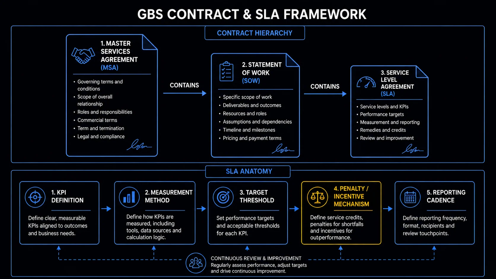

Contracts and Service Agreements The document matters less than you think. The relationship matters more.
The SLA is necessary. It is not sufficient. Most GBS professionals either over-rely on it as a shield or ignore it entirely. Neither works. This cluster covers what the document actually does — and what it cannot replace.
Sound familiar?
 RYour targets came from a document you have never read.T1 →
RYour targets came from a document you have never read.T1 →
 KThings go wrong and nobody knows what was agreed.T2 →
KThings go wrong and nobody knows what was agreed.T2 →
 PYou imagine SLAs get negotiated in a boardroom. Not quite.T3 →
PYou imagine SLAs get negotiated in a boardroom. Not quite.T3 →
 A"Can you just also handle this?" — again.T4 →
A"Can you just also handle this?" — again.T4 →
 MThe SLA is green and the stakeholder is still cold.T5 →
RYou live inside an SLA you could not quote.T6 →
MThe SLA is green and the stakeholder is still cold.T5 →
RYou live inside an SLA you could not quote.T6 →
What an SLAService Level Agreement — internal agreement between GBS and a business unit defining scope, KPIs, escalation procedures, and service expectations actually is — and what it goes by
The SLA is the signed agreement behind your daily targets — and it travels under several names. The model is in THE FIX.
Your targets have a source.
You have never read it.
RRavi’s turnaround target changes from 48 to 24 hours.
He asks why. "The SLA was updated."
"What SLA?"
Month 8, and he has never seen the document his month is measured against. He feels blind.
You hit targets daily and cannot name where they come from.
One agreement, several names — depending on who signs it with whom.
Ravi asks for the SLA covering his process. Twenty minutes of reading explains rules he had never questioned.
SLA names and variants in depth
SLA is the standard name. But the document covering the GBS-to-business relationship can appear under several labels depending on the organization and context.
- SLA — Service Level Agreement: the most common term across GBS and shared services. Defines scope, KPIs, targets, and remedies. The standard.
- OLA — Operational Level Agreement: used for internal agreements between teams within the same GBS. Governs handoffs between sub-teams rather than GBS-to-business.
- SoW — Statement of Work: more project-oriented. Common in BPO contracts and when new scope is being formally added. More granular than an SLA on deliverables and timelines.
- Service Charter: a lighter, less legally precise version. Used in organizations where the relationship is collaborative rather than contractual by design.
- MSA — Master Service Agreement: the umbrella contract in BPO relationships. SLAs sit underneath the MSA as annexes or schedules.
Contract hierarchy — MSA contains SOW contains SLA
Ask your team lead for the SLA covering your process. Read the scope and targets section.
Found the document. Now read the pages everyone skips.

Contract hierarchy and SLA anatomy — from MSA to reporting cadence
Anatomy of an SLA — what a complete document contains
A complete SLA has service elements and management elements. The management ones get skipped — and missed when things break. The model is in THE FIX.
Everyone reads the targets.
Nobody reads the escalation page.
KA major error. The business is angry.
Klaudia’s team scrambles: who informs whom, in what order, how fast?
Nobody knows. The SLA knows — on a page nobody opened.
"It was all written down. We just never read that part."
She feels sheepish.
You learn the management elements during the incident instead of before it.
A complete SLA has two halves — and the second one is the crisis manual.
Her team runs one dry read of the escalation path. The next incident follows a script instead of panic.
Anatomy of a complete SLA — all elements
A well-structured SLA covers two categories: service elements and management elements. Both are necessary. Management elements are the ones most often skipped — and most often missed when things go wrong.
What is in — and what is explicitly out
The processes covered, the business units served, the geographies included. Critically: what is excluded. Ambiguity here is the most common source of scope disputes.
What GBS receives — and what it delivers
The data, documents, or actions the business must provide for GBS to execute. The deliverables — reports, payments, processed transactions — GBS commits to return. Both sides have obligations.
How performance is measured
The quantitative standards: turnaround time, error rate, processing volume, first-contact resolution. Each metric needs a defined target, a measurement method, and a reporting frequency.
Who owns what on both sides
Named process owners, business unit contacts, escalation owners. The SLA should be clear on who carries accountability — not just which teams are involved.
What happens when targets are missed
The path from issue identification to resolution. Who gets notified at which threshold, in what timeframe, and with what authority to act. An SLA without a working escalation path is a document, not an agreement.
What happens over sustained non-performance
For BPO contracts: service credits, penalty clauses, termination triggers. For internal GBS: typically less formal — escalation to steering committee, formal review triggers, or scope renegotiation rights.
How metrics are calculated
Definitions matter. "On-time payment" means different things to different teams. The SLA must specify the exact calculation method to prevent measurement disputes.
Who gets what, how often
Monthly SLA reports, quarterly business reviews, ad hoc dashboards. Defined in the document — not improvised. The reporting cadence is also what makes the SLA meeting cycle possible.
How disagreements are handled formally
When GBS and the business disagree on whether a target was met — or who caused a miss — there needs to be a defined process. Without one, disputes become political rather than procedural.
How the SLA stays current
Business needs change. Volumes shift. New processes get added. The SLA must specify how and when it gets reviewed — and who has authority to approve changes. Often the most neglected element.
SLA anatomy — five components from KPI definition to reporting cadence
Open your SLA’s escalation section. Write the chain on one sticky note.
You know what is in it. Here is how it actually gets agreed.
Who writes it — and how it actually gets agreed
SLAs are drafted by GBS, socialized with the business, and reviewed on a cycle — not fought over in boardrooms. The model is in THE FIX.
No boardroom. No battle.
A draft and a review cycle.
PPeter joins his first SLA review expecting a negotiation.
Instead: a working session. GBS brought the draft. The business marks up three points.
"That’s it? I expected lawyers."
Thirty minutes later it is agreed. He feels surprised.
You treat the SLA as fixed law. It is a living draft with a review date.
The real process is collaborative and cyclical — three moves, repeated yearly.
Next cycle, Peter brings evidence on one unrealistic target. It gets adjusted — because he showed up at the right meeting with numbers.
How SLAs get agreed — the full process
The formal negotiation most people imagine does not usually happen. The reality is more collaborative — and more pragmatic — than that.
- GBS drafts first: the initial version is prepared by GBS — often the process tower leads or the GBS operations team — drawing on input gathered from the business units during the transition or setup phase
- Business units contribute inputs: what they need, what their volumes look like, what turnaround times matter most to them, what they consider a service failure
- Joint review — not adversarial negotiation: the typical interaction is a working session, not a contract negotiation. The appetite for prolonged formal debate is low on both sides
- Sign-off at leadership level: the SLA is formally agreed between GBS leadership and the relevant business unit head or process owner — rarely below that level
- Then largely left alone: once signed, the SLA tends to stay static unless something significant changes — a major scope addition, a service failure that triggers a formal review, or a governance audit
Reopening an SLA carries a high practical cost for what is often perceived as a low-return activity. Both GBS and business unit leaders have limited bandwidth.
The cost of reopening an SLA:
- Stakeholder alignment across GBS and the business
- Legal or compliance review in some organizations
- Formal approval sign-off
Most organizations instead manage performance through the service review cadence, using the SLA as a reference point rather than an active working document. This works until it does not.
- When targets become outdated and no longer reflect actual volumes or expectations
- When scope creep accumulates without triggering a formal update
- When a service dispute surfaces that the SLA cannot resolve because it no longer reflects reality
- Surveys are underused and undervalued. Periodic satisfaction surveys — done fairly, with questions that reflect what the business actually cares about rather than what GBS wants to hear — are one of the most effective tools for surfacing perception gaps before they become escalations. The key is asking the right questions and acting on the results visibly.
- KPIs and metrics matter more in practice than the SLA document. Organizations that actively track, report, and discuss performance metrics — even informally — maintain better service relationships than those that manage by exception. The formal SLA meeting is the floor, not the ceiling.
Find out when your SLA’s next review is. Put the date in your calendar.
Agreements set the scope. Stakeholders test it weekly.
When the business asks for something outside scope
"Can you just also…" requests come in three kinds: absorb, clarify, or route to change control. The model is in THE FIX.
"Can you just also handle this?"
Third time this month.
AFriday, 4 PM. A stakeholder pings Amara.
"Small thing — can you also pull this report weekly?"
Last month it was a new reconciliation. Before that, extra data entry.
"Am I allowed to say no?"
Her queue grows and her SLA never changes. She feels stretched.
Every extra task you take on without formally adding it to the agreement becomes work you are expected to do, with no recognition that it was never part of the deal.
Not every request is the same request. Triage it before answering.
Amara answers with the triage: happy to help once — recurring goes through the change process. The stakeholder respects the clarity.
Out-of-scope requests in depth — full decision guide
It will happen. "Can you just also handle this?" is one of the most common conversations in GBS. How you respond depends on what kind of request it actually is.
- One-off requests related to the existing process
- Small favors within your process domain
- Occasional exceptions that do not change the underlying service
- Clarifications or additional outputs already covered by the data you hold
- Reasonable requests during peak periods — goodwill has real value
- Changes to how a defined process runs — steps, approvals, systems
- Changes to deliverables or output formats that affect downstream teams
- Process improvements or redesigns with cross-team impact
- Anything that affects other business units receiving the same service
- GPOGlobal Process Owner — accountable for the end-to-end design and standardization of a process across all GBS and business unit touchpoints owns process design — route through them, not around them
- New scope being added to GBS coverage
- Removal of scope — equally significant, equally formal
- Fundamental changes to defined deliverables
- Changes that affect headcount, cost, or system configuration
- Anything requiring SLA amendment, new KPIs, or revised targets
Take your newest "can you also" request. Sort it: absorb, clarify, or change control.
Scope handled. But the contract was never the whole story.
The contract does not replace the relationship
The SLA sets the floor. The relationship sets the daily experience. You need both. The model is in THE FIX.
Green SLA. Cold stakeholder.
The contract cannot fix that.
MMiguel’s numbers are compliant. All targets met.
His stakeholder still escalates around him. Still copies leadership.
"We hit everything. Why are they still unhappy?"
The SLA has no answer. He feels puzzled.
You point at the contract when the problem is the relationship.
The two do different jobs — and only one of them runs your Tuesday.
Miguel starts a monthly 20-minute call with no agenda beyond "how is it going." Three months later, escalations come to him first — not around him.
Contract vs relationship in depth
This is the thing most textbooks on GBS governance get wrong. The SLA is a reference document. The service relationship is what actually determines the daily experience on both sides.
Establishes the floor
The SLA defines minimum standards, shared vocabulary, and accountability structures. It is useful when things go wrong — as a reference point, an escalation framework, and a record of what was agreed.
- Creates shared definition of scope and expectations
- Provides a basis for formal escalation
- Protects GBS from absorbing unlimited informal scope
- Evidence trail for governance and audit purposes
- Necessary — but not sufficient
Determines the actual experience
Perceived service quality is not the same as measured service quality.
- A business unit that trusts GBS will tolerate an occasional miss
- One that does not trust GBS will escalate before the miss is confirmed
- The relationship determines which you get
- Shapes how flexibly the SLA is interpreted in practice
- Determines how early problems surface before they become escalations
- Influences whether the business unit advocates for or against GBS in leadership conversations
- Built through consistent delivery, proactive communication, and genuine accountability
- Cannot be outsourced to the SLA document
KPIs can show green while the business feels the service is poor. This happens when what GBS measures is not what the business actually values, or when the measurement methodology and the business experience have drifted apart.
A GBS that only manages to metrics without managing perceptions will eventually face a stakeholder relationship breakdown that the SLA cannot resolve. The fix is not a new SLA. It is a conversation.
- Trust and goodwill are operational assets, not soft skills. A GBS that has built genuine credibility with its business units gets more runway when something goes wrong, more flexibility in scope discussions, and more honest feedback when performance is slipping. These are measurable operational advantages. They cannot be contracted into existence.
- Using the SLA as a shield backfires. Responding to every request with "that is outside scope" destroys relationships. Responding with a conversation about what is possible, what requires a formal process, and what you can accommodate as goodwill — that builds them. The document does not make the decision. You do.
- Metrics that do not capture what matters create false confidence. If your SLA measures invoice processing turnaround but the business's real frustration is query resolution time, you can be technically compliant and practically failing. Closing that gap — by surfacing it to your leaders — is one of the most valuable contributions an analyst or specialist can make.
Book one 20-minute call with your most distant stakeholder. No slides. Just listen.
And if you are early in your career? You are living inside all of this already.
What this means if you are early in your career
You are not writing SLAs yet — you are living inside one. Know your hard targets and your scope edges. The model is in THE FIX.
You will not write an SLA this year.
You live inside one today.
 R
RA stakeholder asks Ravi to commit to a same-day turnaround.
Old Ravi would say yes to be helpful.
This Ravi checks first: the SLA says 48 hours — and same-day means dropping other work.
"I can do it as an exception — or we adjust the agreement."
The stakeholder blinks. Then nods. Ravi feels steady.
Saying yes to requests outside your scope feels helpful. But it teaches the other side that your team's extra work is free — and once it is free, it is expected.
Two things to actually know, cold.
Knowing the agreement turned a people-pleaser reflex into a professional answer that raised his standing.
Career implications in depth
You are probably not writing SLAs at analyst or specialist level. But you are living inside them every day. Two things matter most.
- Understand which KPIs apply to your work — not in the abstract, but the specific targets you are expected to hit
- Know your turnaround time commitments, your error rate thresholds, your reporting deadlines
- Know the escalation path — what to do when you cannot meet a target and when to raise it
- Understand what "in scope" and "out of scope" means for your process — so you can respond confidently when asked for something that sits outside it
- Review your SLA metrics at least once — most people have never actually read the document that governs their performance
- Understand what actually matters to the business contacts you work with — not just what the SLA says they care about
- Pay attention to repeated requests, workarounds, or frustrations that appear outside formal escalation channels — these are signals
- If you spot a gap between what the SLA measures and what the business needs, bring it to your manager — that observation is genuinely valuable
- Do not wait for service review meetings to communicate — proactive updates when something is at risk build more trust than a polished retrospective after it fails
- Both directions matter: misalignment can come from the business having unrealistic expectations, or from an SLA that no longer reflects reality. Both are fixable — if they are surfaced
Memorize your three hardest targets and one scope boundary. Use them in your next yes.
The promises are signed. Cluster 5: how they get measured.
Key terms in this cluster
Every underlined term in this page links here. A full cross-pillar glossary is available at the GBS Insider Club Field Guide.
Cluster 4 covers the formal and informal structures that define the GBS service relationship. Cluster 5 goes deeper into the metrics themselves.
- ✓ SLA anatomy — service and management elements of a complete agreement
- ✓ How SLAs get written and agreed — GBS drafts, BU inputs, low appetite for updates
- ✓ Scope change framework — what to absorb, what goes to the GPO, what requires formal process
- ✓ Contract vs. relationship — why the document is necessary but not sufficient
- → Performance Measurement — SLAs, KPIs, TAT, FTE ratios, and how GBS proves its value — covered in Cluster 5
Want the full breakdown on video?
GBS contracts and service agreements covered in depth on the GBS Insider Club YouTube channel — with real examples, frameworks, and career implications.
▶ Subscribe on YouTubeKnowing the frameworks is the entry ticket. Applying them — visibly, at your actual job — is what gets you promoted.
The GBS Insider Club Career Playbooks turn this theory into a guided 90-day program for your role: self-assessment, practical exercises, templates, and Julian's unfiltered practitioner playbook.
Explore the Career Playbooks → Back to GBS Fundamentals